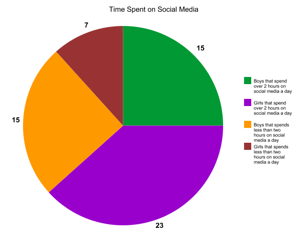
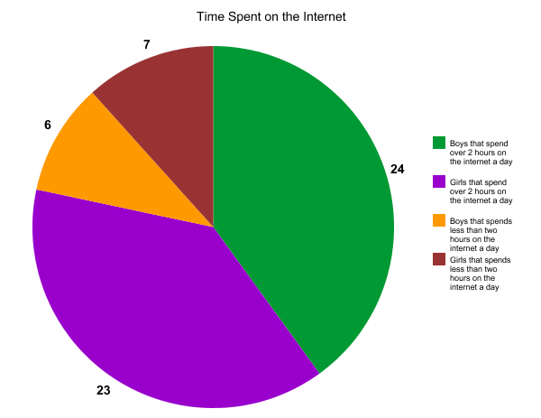
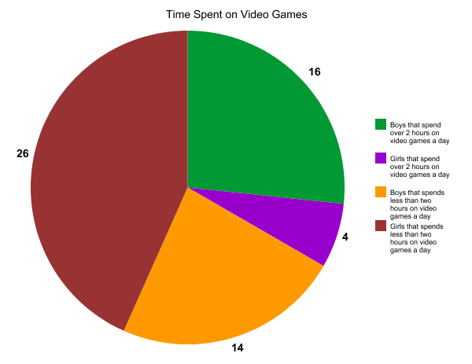
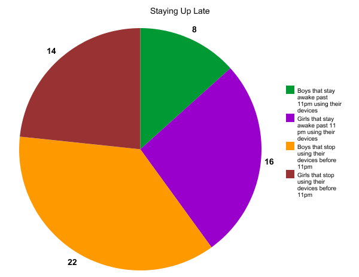
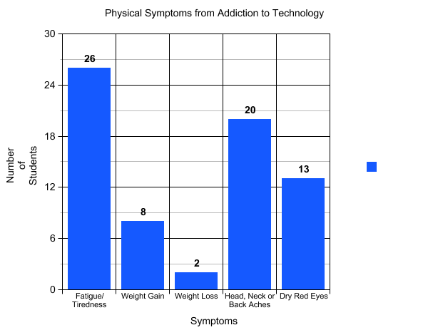

In the second week of term 1, 2018, our digital technology team surveyed 60 students at our school, O'Loughlin Catholic College (10% of the student population). We did this so that we could find out how large of a problem addiction to technology is in our school. Here are the results:

In the graph above, 15 boys said that they spent over 2 hours a day on social media, 15 boys said they don't, 23 girls said they do, and 7 girls said they don't. As you can see, more girls use social media for long periods of time a day than boys since around 76.6% of girls said they did, and only 50% of boys said they did. However, in general, 63% of the students surveyed said that they spend over 2 hours a day on social media. This is not an ideal amount, however it is good to know that 37% of students know when to stop.

As you can see from the graph above, internet addiction is very common in our school. Around the same number of boys and girls said that they spend over 2 hours on the internet a day. This means that 78% of the students surveyed are spending too much time on the internet, and need to be made aware of that addiction to technology can have many negative impacts on their lives.

This graph above presents a much more promising result than all the others so far. Only one third of the students surveyed said that they spent over 2 hours a day playing video games. This means that two thirds of the students spend less than 2 hours a day playing video games! While it can be seen that more boys play games excessively than girls, it is a very good sign that 40 of the students surveyed are limiting the amount of time that they use on video games.

The next question in the survey was "Do you stay up past 11pm using your device(s)? The results in the graph above show that 8 boys and 16 girls said yes, while 22 boys and 14 girls said no. We can see that more girls will stay up late on their devices than boys, however, the overall results show that only 40% of the students that participated in the survey stay up plate on their devices, and 60% decide to stop using their devices before 11pm! This means that many students are choosing not to allow technolgy to govern their lives.

The graph above is displaying how many of the survey participants experienced the physical symptoms of addiction to technolgy - fatigue/tiredness, weight gain, weight loss, head neck or back aches, or dry red eyes. Of the 60 students, 26 students (43%) said they experienced fatigue or tiredness, 8 students (13%) experienced weight gain, 2 students (3%) experienced weight loss, 20 students (33%) experienced head neck or back aches, and 13 students (22%) experienced dry red eyes. While this seems like many people experienced the physical symptoms of technology addiction, it actually shows that there are more students in O'Loughlin that haven't experienced a symptom than there are that have.
We can conclude from the survey and these graphs, that in O'Loughlin Catholic College, like many other places all over the world, addiction to technology is a problem. There are many students that use their devices excessively for over 2 hours a day on things like social media, video games and the internet, and stay up past 11pm using them. However, we also found out that there are also many who do not do this, and are not addicted. This is very promising and means that there is hope for the future. As long as the issue addiction to technology is continued to be made more aware of, this problem could end some day in the future.